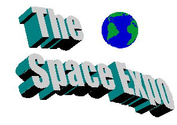

More than 60 exhibits and events await visitors at the Space Expo,
Looking Towards the Future
Friday-Sunday, April 24-26
 The Space Expo is an annual, student-run event that showcases recent developments in astronomy and space sciences and demonstrates how these developments can be applied to everyday life. The event includes student, government and industrial exhibits, and features presentations from NASA, Ball Aerospace, Rockwell, and IBM.
The Space Expo is an annual, student-run event that showcases recent developments in astronomy and space sciences and demonstrates how these developments can be applied to everyday life. The event includes student, government and industrial exhibits, and features presentations from NASA, Ball Aerospace, Rockwell, and IBM.
The Space Expo will feature activities for the kids, including Creating a Comet, Building a Model Rocket, and The Inter-Galactic Scavenger Hunt. Friday is Students' Day, with school children in grades K-8 displaying astronomy and space science projects and competing for individual and school achievement awards.
Professor Greg Stewart's famous astronomy show is also coming to the Space Expo. Professor Stewart will show the wonders of the night sky and discuss the nature of quasars, exploding stars, and black holes. Presentations will be at the Brinkman Planetarium at 1 p.m. and 3 p.m., Friday through Sunday.
Please check out these other events:
- Bryd Hall Rockwell representatives and graduate students will display some of the latest advances in robotics for use in the Space Shuttle missions.
- Mitchell Theatre Famous astronomer and popular science writer, Kathy White, will present a talk, "Forward to Mars and Beyond," on Saturday at 7 p.m. Tickets for this very special event are $12. Seating is limited.
- Astronomy Classrooms Graduate students and professors display the results of their research in atmospherics, satellite technology, climatology, and space engineering.